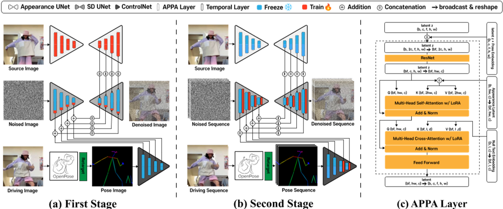
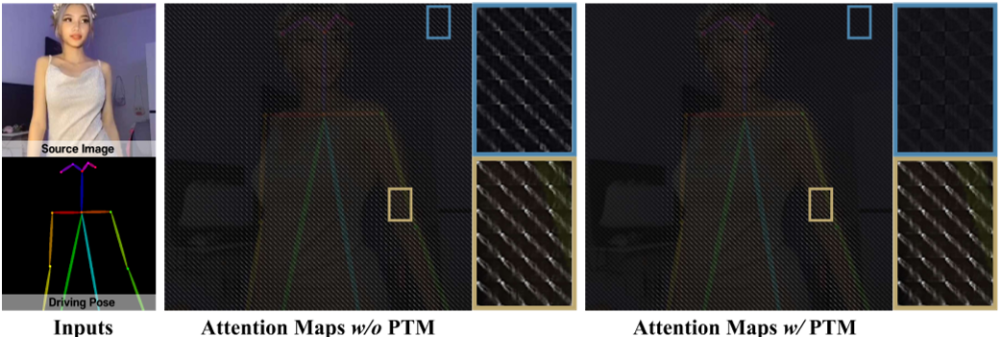

TCAN: Animating Human Images with Temporally Consistent Pose Guidance using Diffusion Models
| 缩写 | 英文 | 中文 |
|---|---|---|
| APPA | APpearance-Pose Adaptation layer |
2024
核心问题是什么?
基于diffusion model的pose驱动人体图像的视频生成，能够生成逼真的人体视频，但在时间一致性和对pose控制信号的鲁棒性方面仍然存在挑战。
本文方法
我们提出了 TCAN，一种姿势驱动的人体图像动画合成方法，它对错误姿势具有鲁棒性，并且随着时间的推移保持一致。
- 利用预先训练的 ControlNet，但不进行微调，利用其“文本+动作 -> 图像”的能力。
- 保持 ControlNet 冻结，将 LoRA 适配到 UNet 层中，使网络能够在姿势空间和外观空间之间的对齐。
- 通过向 ControlNet 引入额外的时间层，增强了针对异常姿态的鲁棒性。
- 通过分析时间轴上的注意力图，设计了一种利用姿势信息的新型温度图，从而实现更静态的背景。
效果
大量实验表明，所提出的方法可以在包含各种姿势（例如《赤壁》）的视频合成任务中取得有希望的结果。
核心贡献是什么？
-
时间一致性：TCAN专注于生成在时间上连贯的动画，即使输入的姿势检测有误差，也能保持动画的稳定性。
-
使用预训练的ControlNet：与以往方法不同，TCAN使用预训练的ControlNet而不进行微调，利用其从大量姿势-图像-标题对中获得的知识。
-
LoRA适应：为了在保持ControlNet冻结的同时对齐姿势和外观特征，TCAN采用了LoRA（Low-Rank Adaptation）适应UNet层。
-
时间层的引入：通过在ControlNet中引入额外的时间层，增强了对姿势检测器异常值的鲁棒性。
-
注意力图分析：通过分析时间轴上的注意力图，设计了一种利用姿势信息的新颖温度图，允许更静态的背景。
-
扩展到不同领域：TCAN不仅在TikTok数据集上训练，还能够泛化到未见过的领域，如动画角色。
-
姿势重定向方法：提出了一种姿势重定向方法，以适应源图像中的对象与实际人体不同的身体比例。
大致方法是什么？

方法涉及两阶段训练策略。我们从训练视频中随机选择两个图像，分别用作source图像和driving图像。
第一阶段是以多张image为条件的图像生成任务，appreance UNet 和 APPA 层在source图像上进行condition训练，同时 ControlNet 被freeze。
在第二阶段，训练 UNet 和 ControlNet 中的时间层。
| 输入 | 输出 | 方法 |
|---|---|---|
| driving frame | pose information | OpenPose |
| pose information | pose information | ControlNet(fix) 为什么要强调fix？ |
| pose information, noise | encoder feature z | UNet Encoder |
| reference image | appearance information za | UNet |
| encoder feature z appearance information za | denoised image | UNet Decoder |
| intermediate feature maps of the appearance | attention mechanism |
reference图像注入
z（encoder feature）与za（appearance information）结合
以attention的方式结合z和za，仅应用于UNet Decoder部分

APPA层
在UNet的所有attention层中引入APPA layer（类似LoRA）
没有APPA的UNet能生成与driving pose相似的动作，但不是保持reference image中的外观。引入APPA层有以下三个作用：
- 解决frozen ControlNet引入的artifacts
- 防止对training domain过拟合
- appearance与pose解耦
对错误动作的鲁棒性
在UNet的所有层后面加入时序层，仅在第二阶段的训练启用时序层。
Temporal层用于解决pose不正确引入的artifacts。pose层的实现类似AnimateDiff。
背影闪烁问题
引入Pose-driven Temperature Map。
把image resize到和attention map相同的大小，发现前景像素对应的attention的对角值更高。

与前景相比，背景在时间轴上的焦点往往不太具体，因此可以通过attention map，仅对背景部分进行平滑。| 输入 | 输出 | 方法 |
|---|---|---|
| pose image | binary mask B | 画了骨架的地方标记为1，否则为0 |
| binary mask B | distance map D | 计算每个像素到离它最近的骨骼的距离 |
| distance map D | PTM \(\Tau\) | \(\Tau = \tau * D + 1\) PTM代表attention的temperature |
| PTM \(\Tau\) | resized PTM \(\Tau\) | 把PTM \(\Tau\) resize到与attention map相同的大小 |
以以下方式把PTM \(\Tau\)引入到UNet attention layer中：

长视频推断策略
MultiDiffusion [2] along the temporal axis
训练与验证
训练策略
| 阶段 | freeze | trainable | 特有模块 |
|---|---|---|---|
| 第一阶段 | denoising UNet with SD1.5 OpenPose ControlNet | appreance UNet with Realistic Vision LoRA layer in APPA | 无 |
| 第二阶段 | denoising UNet with SD1.5 OpenPose ControlNet | temporal layer in denoising UNet temporal layer in ControlNet | temporal layer in denoising UNet temporal layer in ControlNet |
数据集
loss
同Stable Diffusion Model
训练策略
有效
-
用户研究：进行了用户研究来评估TCAN在不同数据集上的表现，包括动画角色，结果显示TCAN在保持运动和身份、背景、闪烁和整体偏好方面均优于现有技术。
-
实验结果：TCAN在多个指标上展示了优越的性能，包括L1损失、结构相似性（SSIM）、感知损失（LPIPS）、Fréchet距离（FID）和视频质量指标（FID-VID和FVD）。
局限性
启发
遗留问题
TCAN（Temporally Consistent Human Image Animation）技术在实际应用中可能面临以下挑战和限制：
-
姿势检测器的准确性：TCAN依赖于姿势检测器来提供输入姿势序列。如果姿势检测器出现误差，可能会影响生成动画的质量和时间一致性。
-
数据集的多样性：TCAN在特定数据集（如TikTok数据集）上训练时表现良好，但在处理与训练数据分布显著不同的数据时，可能需要额外的调整或训练。
-
计算资源：高质量的图像和视频生成通常需要大量的计算资源。TCAN作为一种基于扩散模型的技术，可能在实际部署时面临计算能力和效率的挑战。
-
泛化能力：尽管TCAN旨在提高对未知领域的泛化能力，但在面对与训练数据差异较大的新领域时，其性能可能会下降。
-
模型的复杂性：TCAN结合了多种技术，如ControlNet、LoRA和时间层，这增加了模型的复杂性，可能需要专业知识来维护和更新。
-
过拟合风险：在特定领域内训练时，模型可能会过拟合到该领域的特定特征，从而降低其在其他领域的适用性。
-
伦理和隐私问题：生成逼真的人类动画可能引发伦理和隐私问题，尤其是在创建deepfakes或未经授权使用个人图像时。
-
内容的可控性：虽然TCAN提供了一定程度的控制能力，但在生成特定风格或满足特定条件的内容方面可能仍有限制。
-
实时性能：在需要实时生成动画的应用场景中，TCAN的处理速度和响应时间可能是一个考虑因素。
-
模型的可解释性：深度学习模型通常被认为是“黑箱”，TCAN模型的决策过程可能不够透明，这可能限制了其在需要高度可解释性的应用中的使用。
-
对抗性攻击的脆弱性：像其他基于深度学习的模型一样，TCAN可能对精心设计的对抗性攻击敏感，这可能需要额外的防御措施。
-
长期视频生成的挑战：由于内存限制，TCAN可能难以一次性生成长期视频。虽然可以通过多扩散方法来解决这个问题，但这可能会影响视频的整体一致性。
-
潜在的滥用问题：论文最后指出，尽管TCAN在动画生成方面取得了进展，但这种技术可能被滥用于生成伪造视频（deepfakes），因此需要进一步研究验证模型以检测生成模型的痕迹。
这些挑战和限制表明，尽管TCAN在技术上具有创新性，但在将其应用于实际问题之前，需要仔细考虑和解决这些潜在的问题。
参考材料
- 项目页面：https://eccv2024tcan.github.io/